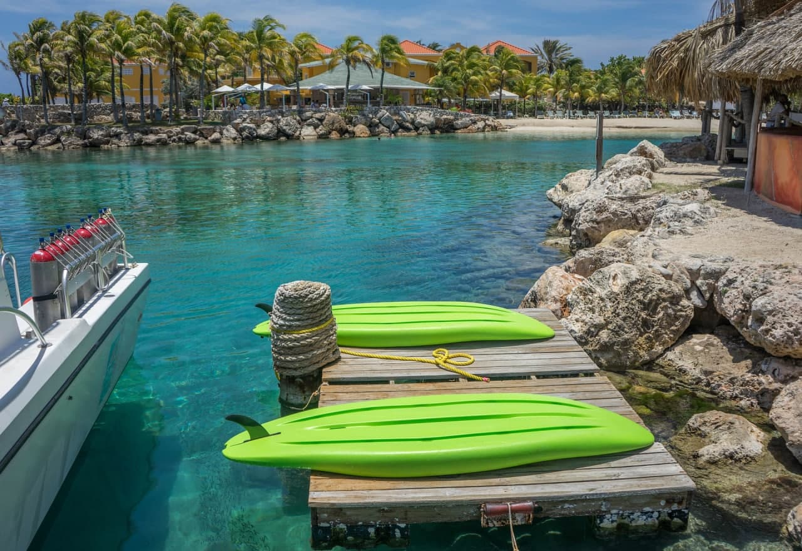
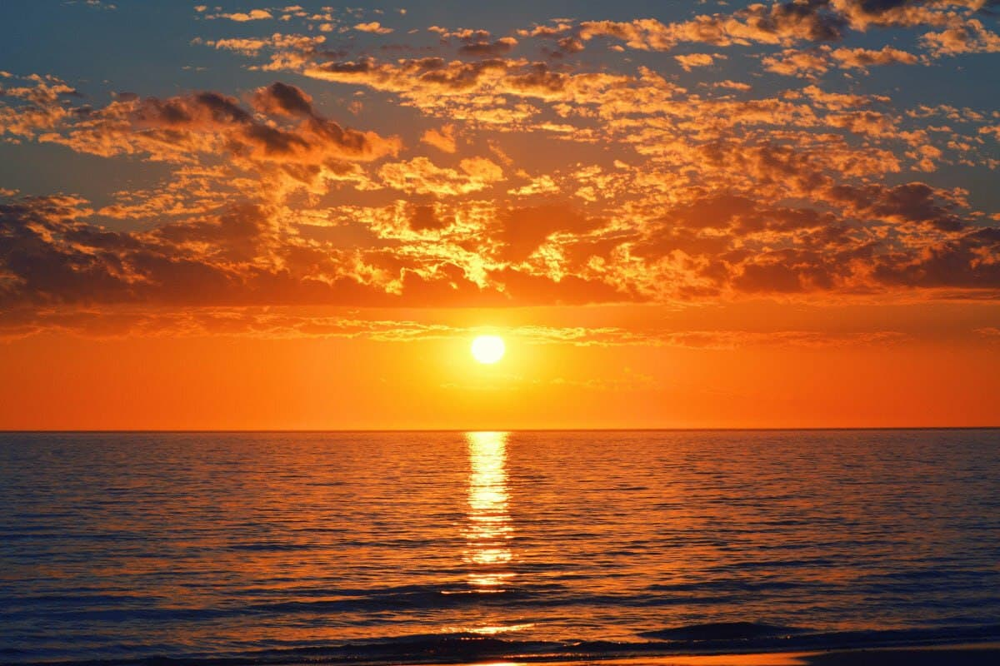

Pulau Gemia– Destinasi Honeymoon Pulau di Terengganu yang Lebih Privasi
Pulau Gemia merupakan pulau persendirian yang terletak 800 m ke arah utara Pulau Kapas. Perairan di Pulau Gemia juga tidak kurang hebatnya dengan pantai yang cantik dan dikelilingi terumbu batu karang. Hanya terdapat satu resort di sini iaitu Gem Wellness Spa & Island Resort. Bagi anda yang nak percutian yang lebih privasi di pulau yang terpencil, bolehlah ke Pulau Gemia.
Destinasi Pulau Gemia sangat ideal untuk mereka yang lebih sukakan ketenangan tanpa kesibukan pelancong yang terlalu ramai. Kebiasaannya pelancong yang datang bercuti di Pulau Gemia lebih sukakan aktiviti yang santai & untuk berehat menenangkan fikiran tanpa aktiviti-aktiviti lasak di air. Namun, sekiranya pelancong nak lakukan aktiviti snorkeling atau berkayak, Pulau Gemia tetap ada kawasan menarik di sekitar untuk diterokai. Sangat sesuai untuk dijadikan sebagai destinasi berbulan madu bersama pasangan anda.
Peta ke Pulau Gemia



Pulau kecil ini juga dapat menarik ramai pelancong datang ke sana kerana memiliki panorama matahari terbit yang cantik selain pulau ini yang kecil dan kurang pengunjung dapat menggamit persekitaran yang romantis dan damai.